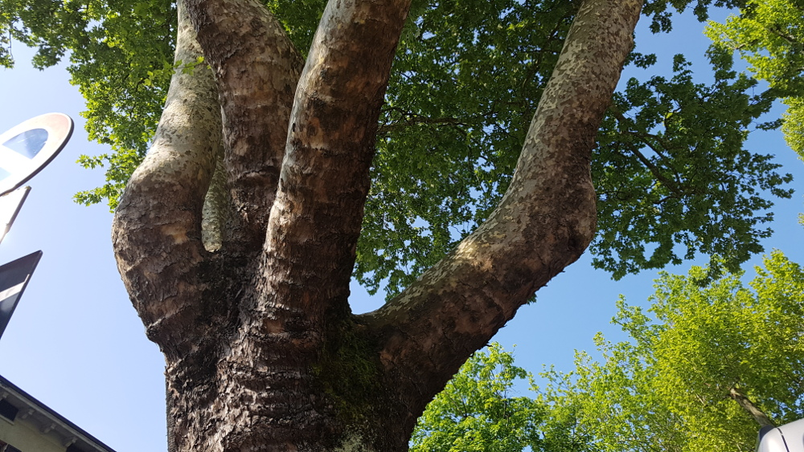

Ci fu un Tempo in cui il platano di rami ne aveva sei. Tanto grandi e fogliati che durante i mercati caldi, i commercianti di bestiame vi tenevano gli animali al riparo dal sole.
Un pomeriggio, durante una fiera estiva, si formarono d'improvviso, come spesso accade, dei nuvoloni temporaleschi. Non appena i primi goccioloni incominciarono a cadere, molte
persone trovarono riparo sotto i provvidenziali rami del platano.
D'improvviso un fulmine colpì l'albero, fu uno schianto terrificante, il Platano vibrò da cima a fondo, gli animali saltavano e scalciavano nel tentativo di liberarsi, mentre la
gente gridava spaventata aspettandosi l'imminente crollo del gigantesco albero, sarebbe stata una strage.
Quando tutto s'acquietò alcuni guardarono verso l'alto e, quasi increduli, s'accorsero che il fulmine aveva colpito e troncato uno dei grossi rami, che l'albero aveva miracolosamente
trattenuto evitando che finisse sul capo di quanti vi avevano trovato riparo.
-"Ci ha salvati il Platano"- disse uno di loro.
-"Gh'è r'stà sèinqu' rami, cum' i didi d'una man
(Sono rimasti cinque rami, come le dita di una mano)"- aggiunse un'altro.
-"La man ch' tegna sü al celu d' Port' F'rnèiz'
(La mano che tiene su il cielo di Porta Farnese)"- commentò un terzo.
Non poteva immaginare che ancora oggi, a distanza di anni, il Platano viene indicato, sia pure in forma abbreviata, "la man".

| Company |
Contact |
| Alfreds Futterkiste |
Maria Anders |
| Centro comercial Moctezuma |
Francisco Chang |
| Ernst Handel |
Roland Mendel |